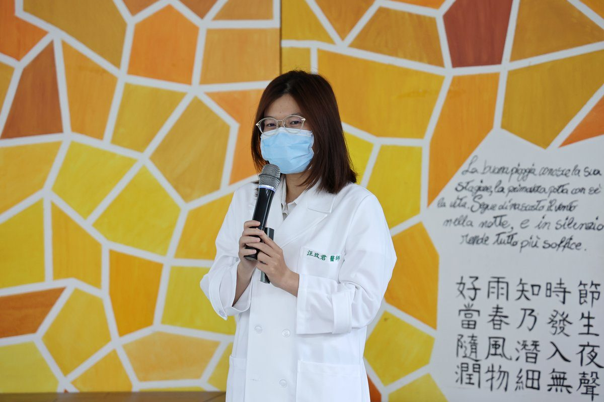

吃得下更要吃得安全 花蓮慈院深入社區守護長輩吞嚥

可樂電子報小編/編輯
吃飯與喝水是日常生活再自然不過的事，然而隨著年齡漸長或慢性疾病影響，長者的咀嚼與吞嚥機能可能悄然退化。為守護銀髮族「由口進食」的幸福與尊嚴，花蓮慈濟醫院復健醫學部吞嚥咀嚼中心團隊今（8）日上午走入碧雲莊社區，配合「健康臺灣深耕計畫－花蓮縣巷弄長照站咀嚼吞嚥障礙照護擴大計畫」舉辦安全吞嚥衛教講座，由語言治療師指導長輩認識吞嚥警訊並演練健口操，耳鼻喉頭頸外科醫師亦提供現場專業評估與諮詢，全力守護高齡長者進食健康。

講座中，語言治療師鄭明彥指出，吞嚥機能衰退常呈現漸進過程，多數長輩誤以為只是正常老化而輕忽其危險性。若長者日常進食出現喝水容易嗆咳、每餐用餐時間超過30分鐘、餐後喉頭常有食物殘留感、進食後聲音多痰沙啞，或是半年內無故體重明顯下降，皆為咀嚼吞嚥功能異常的重要警訊。治療師現場帶領長輩實作頭頸放鬆與唾液腺按摩操，並強調用餐應維持坐姿端正、專心細嚼慢嚥，避免進食中說話或過度大口吞嚥。

花蓮慈院耳鼻喉頭頸外科醫師汪玟君現場提供一對一評估諮詢，仔細檢視長輩的吞嚥歷程與喉部機能。汪醫師指出，若長期忽視嗆咳問題，食物與口水極易誤入氣管演變為吸入性肺炎，甚至引發肌少症與營養不良，唯有及早透過耳鼻喉頭頸外科或復健科精密儀器檢查，並配合專業吞嚥復健，才能防範重症發生。

復健醫學部主任洪裕洲表示，該計畫期盼將醫療專業資源垂直整合延伸至社區巷弄據點，讓長輩在熟悉的環境中獲得支持，並培育第一線照服員敏銳的篩檢與轉介能力，串起「及早發現、及時衛教、醫療介入、持續追蹤」的完整照護網絡。碧雲莊社區發展協會理事長鍾秀妹亦對醫療團隊的熱忱服務深表感謝，攜手打造健康安心的在地高齡友善社會。